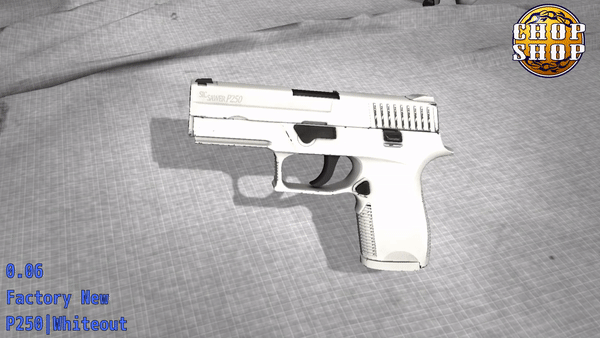
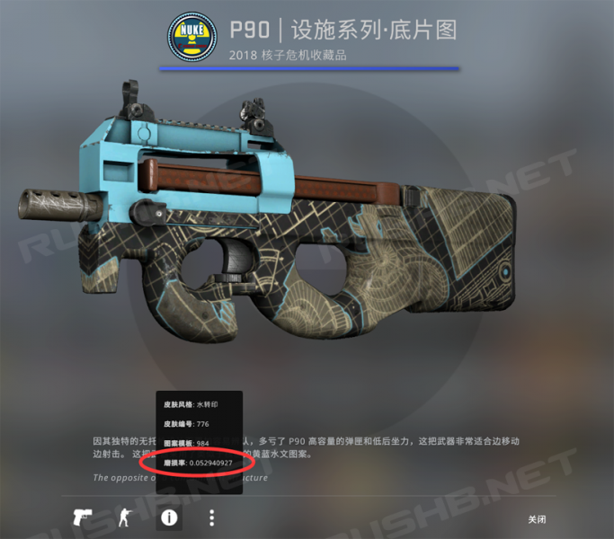
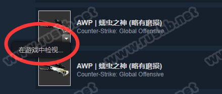
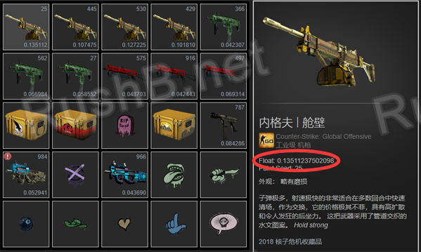
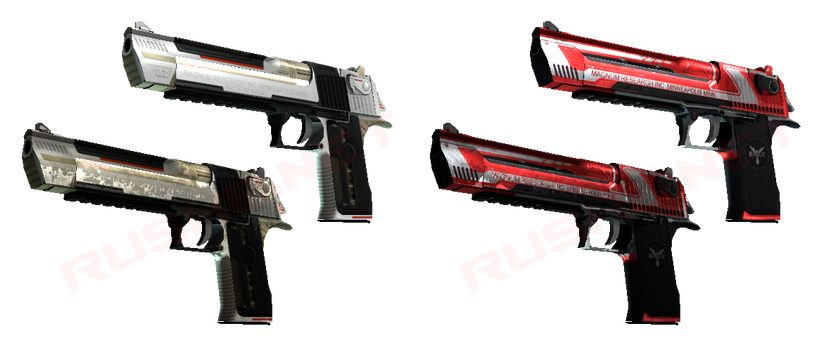
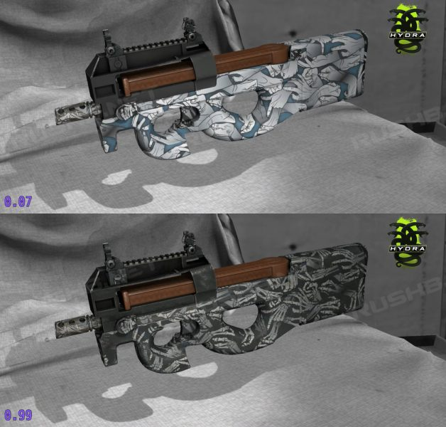

CSGO RushB中文网
CSGO RushB中文网
本文将为新手玩家介科普CSGO武器皮肤/饰品的磨损度：
磨损度
磨损度（磨损率/Wear Amount）是CSGO皮肤/饰品重要元素之一，表明武器外观图案新旧程度，数值从0到1，可以精确到小数点后20位。磨损度越低，皮肤就越新；磨损度越高，皮肤就越旧。
游戏中，外观分成5大类，并对应不同的磨损度范围，从低（新）到高（旧）分别是：
- 崭新出厂（Factory New/FN），磨损度范围（0.00-0.07）
- 略有磨损（Minimal Wear/MW），磨损度范围（0.07-0.15）
- 久经沙场（Field-Tested/FT），磨损度范围（0.15-0.37）
- 破损不堪（Well-Worn/WW），磨损度范围（0.37-0.44）
- 战痕累累（Battle-Scarred/BS），磨损度范围（0.44-1.00）

CSGO皮肤产生（开箱/掉落/合成）后，磨损度永久固定，不会随使用而改变。另外，不同磨损度只有皮肤外观不同，不会影响武器属性。
在客户端中，磨损度可以在皮肤检视界面下方的信息按钮查看：

而在游戏外，比如社区市场的皮肤，可以将鼠标移动到图片上显示三角按钮点击“在游戏中检视”进入客户端查看。

如果你想要求方便快捷的话，推荐浏览器插件CSGOFloat Market Checke，可直接在Steam库存、社区市场页面直接显示磨损度：

游戏内磨损度只会显示到小数点后9位，想要更精确的数值，可以前往 CSGO.EXCHANGE 查看。
本站推荐CSGO皮肤数据网站：CSGOSTASH，可查看所有皮肤详细信息。
复制品
原则上来说，磨损度是唯一的，每件皮肤都有各自的磨损，但市面上存在部分同样磨损的皮肤，这类皮肤成为复制品。
什么是复制品？由于早前V社服务存在漏洞，Steam玩家库存被盗后，可以向客服申述找回，但原本的物品已被黑客转移，无法找回，Steam客服只能将原本的物品复制一份还给失主，所以市面上存在多件同磨损的物品，即我们所说的复制品、复制货。由于漏洞被滥用，在2016年3月份后，Steam客服已经不会再恢复被盗库存，建议广大新人玩家启用手机令牌，保护库存。
*复制品大部分是高端皮肤，比如M4A4 | 咆哮
*如果想要知道皮肤是否唯一，可以通过 CSGO.EXCHANGE 查询
*16年3月以后推出的皮肤不会有复制品
其他
1、有些皮肤不吃磨损
不同种类皮肤在高磨损下效果不同，比如有些皮肤是图案缺失/掉漆，而有些则是亮度光泽变暗。

2、有些皮肤没有崭新
部分皮肤磨损范围有限，比如：M4A4 | 二西莫夫没有崭新和略磨，最好磨损是久经沙场，磨损范围在0.18至1.00之间；沙漠之鹰 | 炽烈之炎则相反，只有崭新出厂和略有磨损，磨损范围在0.00至0.08之间；
3、世界级磨损
有些饰品玩家会追求磨损在0.00000或0.99顶级级别的皮肤，这类皮肤获得概率极低，磨损排名高，价格也高。
4、彩蛋
有些皮肤作者在设计皮肤时隐藏了彩蛋，只有高磨损下才会显示出来。

5、原版匕首有磨损度但外观没区别
虽然原版匕首也设置了磨损度，但是外观上是没有区别的，共用同个贴图，所以打算入手原版匕首的玩家不用考虑磨损。